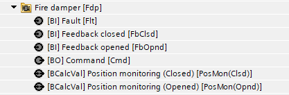
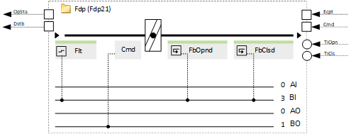
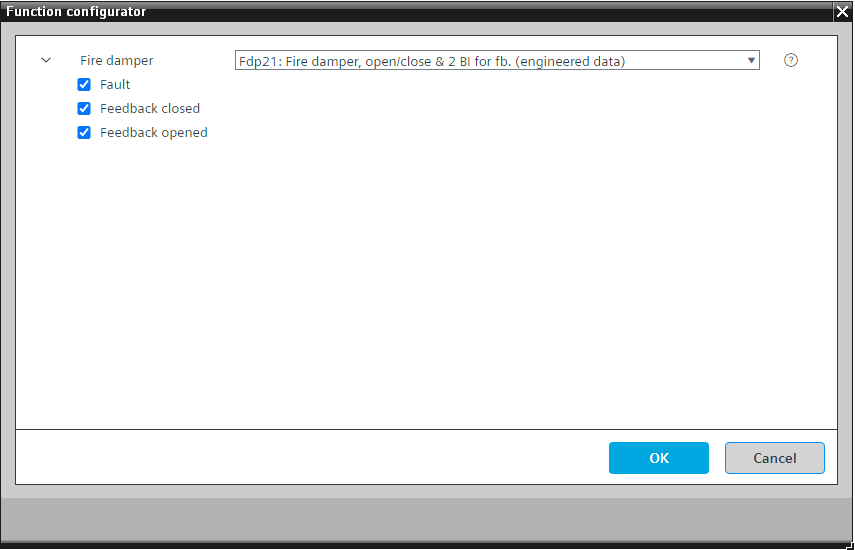

[Fdp21] 防火阀，打开 /close 功能和 2 BI 用于反馈
Program block, name / node subtype: [Fdp21] Fire damper, open/close function & 2 BI for feedback
Library hierarchy: Ventilation and air conditioning equipment
Family: Fdp
项目树 | 图表 |
|---|---|
|
 |  |
Configurator


程序块存储在没有 I/Os. 的库中 使用auto-create and auto-connect函数创建 I/Os 和 /or 将它们连接到接口块，例如 R_A、CMD_B。或者，从包含库中预定义 I/Os 的文件夹中取出 I/Os，并从工厂中取出 /or，并将它们连接到接口块。
控制具有 open/close 功能和可选反馈信号和故障报警的防火阀。
打开和关闭时间可以在程序中参数化。
该程序块具有以下可选功能：
Option: Fault (1xBI)
读取故障触点并生成警报。
该选项主要用于带有通过总线（例如 Modbus）集成的执行器的阻尼器。
Option: Feedback closed (1xBI)
读取执行器的终端开关以了解风门的关闭位置。
Option: Feedback opened (1xBI)
读取执行器的终端开关以了解风门的打开位置。
程序逻辑读取二进制命令，考虑打开和关闭时间，将来自选项“反馈打开”和/or“反馈关闭”的执行器末端开关信号与命令进行比较，并可以生成两个警报（二进制计算值）：“位置监控（打开）”和“位置监控（关闭）”。如果“位置监控（打开）”报警，空气处理机组将停止。
姓名 | 描述 | 类型 | 报警/通知类 | 趋势/类型 |
|---|---|---|---|---|
|
FbOpnd | Feedback opened | BI：二进制输入 | No | No |
属于该元素的其他元素（以及FbClsd): PosMon (Opnd) | Position monitoring (Opened) | BCalcVal: Binary calculated value|警报：有|Notification class 4 PosMon (Clsd) | Position monitoring (Closed) | BCalcVal: Binary calculated value|警报：有|Notification class 4 | ||||
FbClsd | Feedback closed | BI：二进制输入 | No | No |
Flt | Fault | BI：二进制输入 | 是的，4 | No |